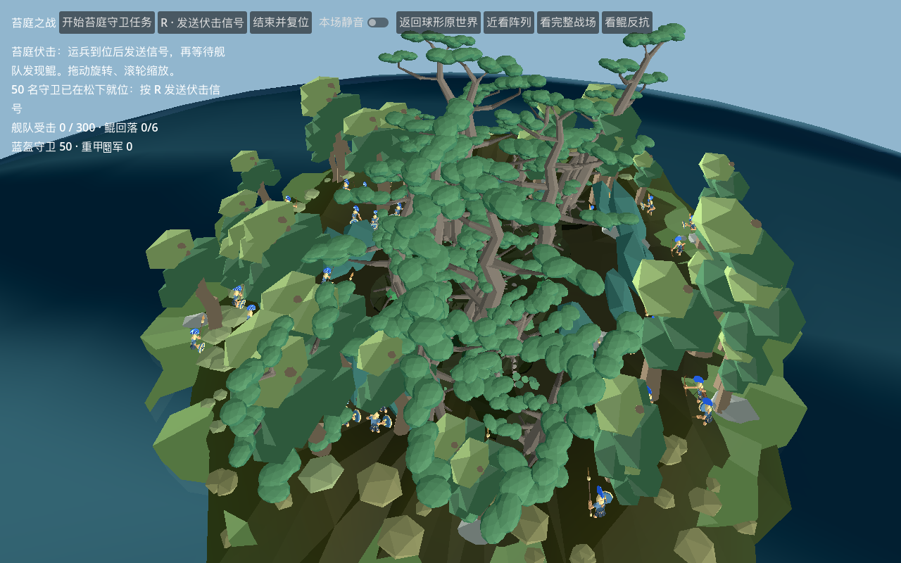
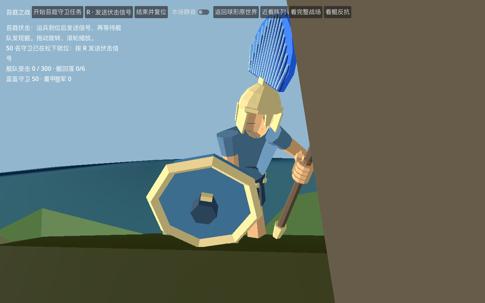

50名首发守卫分散到静态松冠下，位于原有连通干地，保持至少1米间距。全员到位并稳定待命后，按R发送信号；舰队接近才揭开战斗。

实际认可兵模的脚底不移动，武器与身体同步前倾；0.7秒进出姿态。当前无独立膝关节，这是前倾待命，不是屈膝蹲跪。

23项原场景固定步长检查通过，包含实际登陆、松下到位、等待信号、交战、撤军与重置。固定步长验证不等于人工自然通关；完整登岸取械、绕桅、跳板抬脚和岸面承托仍未完成。
场景检查 · 松冠站位审计 · 三兵种姿态检查